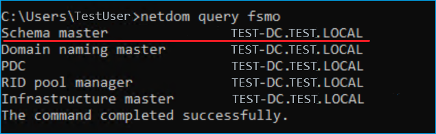
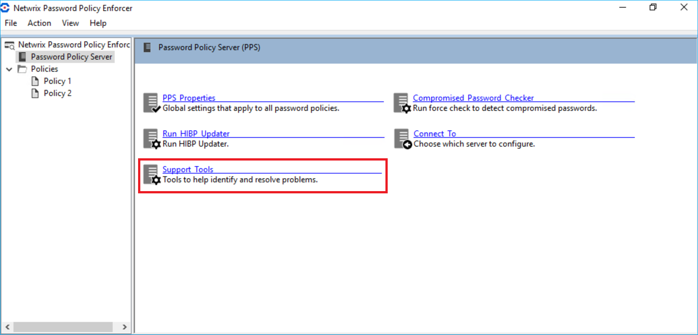
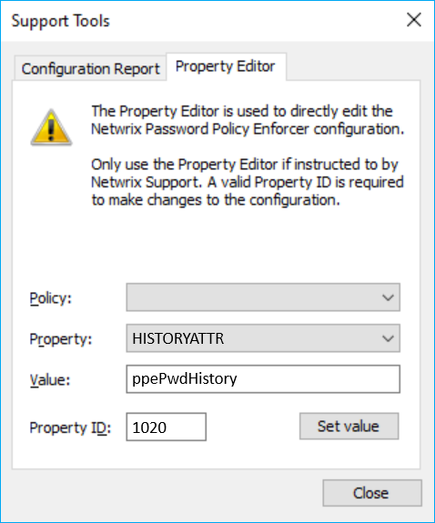

Question
How to set up Netwrix Password Policy Enforcer (PPE) to store the password history in an existing attribute?
Answer
IMPORTANT: While this article covers the use of an existing attribute for the password storage, you can use a newly created attribute. There are 2 distinct benefits when using a new attribute:
The new attribute won't be used by any other application.
The new attribute can be marked as Confidential in Active Directory.
This article covers the use of the ppePwdHistory attribute created by PPE and marked Confidential by default. Alternatively, you can use an existing atribute not used by other applications, e.g. desktopProfile. Learn more about the desktopProfile attribute in Desktop-Profile attribute ⸱ Microsoft 🡥.
Prerequisites
-
The steps described should be performed in your schema master domain controller.
-
The account used to perform the steps described must be a member of the Domain Admin group.
-
In case a custom attribute is to be used, it should be a single-valued attribute with the octet string, printable string, IA5 string, or Unicode string syntax. It should also allow long strings, possibly as long as 5411 characters to store 100 hashes.
Refer to the following steps to discover the schema master domain controller in your environment:
-
In any domain controller in your environment, run the following command in elevated Command Prompt to get a list of Flexible Single Master Operation (FSMO) roles in Active Directory:
netdom query fsmo -
Review the list of FSMO roles to find the schema master domain controller, see the screenshot for a reference.

Setup
Refer to the following steps to configure the password history attribute:
-
In your schema master domain controller, open the PPE configuration console.
-
In the Password Policy Server tab, select Support Tools.
 -
Select the Property Editor tab.
-
Select the
HISTORYATTRvalue in the Property drop-down list. Specify theppePwdHistoryor other attribute value in the Value field. Specify1020in the Property ID field. Click Set value to save changes.
PPE will now store the password history in the attribute selected. Authenticated users can read standard attributes of other users, so the AD permissions for the existing attribute should be changed to prevent users from reading the hashes (password history) of other users. This is required for existing attributes. ppePwdHistory attribute created for PPE is protected by default.
You can also implement the Enforce password history policy to avoid implementing changes to Active Directory. Learn more in Enforce password history ⸱ Microsoft 🡥.